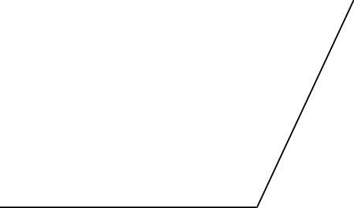
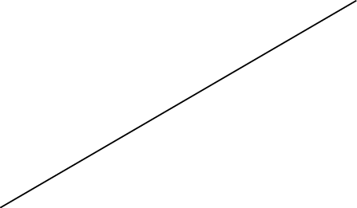

<article>
  <section class="development">
    <h1>Lesson 2:</h1>

    <h1>Law of Sines
    and Law Cosines</h1>

    <h2>Introduction</h2>

    <p class="Lesson---Subheading">The Leaning Tower of Pisa</p>

    <figure>
      
      
    </figure>

    <p class="Lesson---Narrative-text">The Leaning Tower of Pisa
    has been leaning almost since the onset of construction in
    1173. From ground to top, the tower is 183.27 ft along the
    lowest side and 186.02 ft along the highest side. The angle of
    slant of the tower—formed by its shorter slant height and the
    ground—is ${95.5^ \circ }$ y . An apocryphal tale states that
    Galileo Galilei (1564-1642), an Italian physicist,
    mathematician, and philosopher, dropped two cannon balls of
    different weights from the top of this leaning tower in trying
    to demonstrate that the descending speed of a falling body is
    independent of its weight.</p>

    <p>What is the distance traveled by an object dropped from the
    top of the Tower of Pisa, on its lowest side, when it hits the
    ground?</p>

    <p>What is the horizontal distance from the point where the
    object hits the ground to the base of the tower?</p>

    <p>The Tower of Pisa first acquired a slant after the third
    floor was built in 1178. More recently, in 1990, it was closed
    to the public because of safety fears. In fact, the tower was
    on the verge of collapse, and it was projected that it would
    have collapsed between 2030 and 2040. However, it has been
    straightened a bit, but still remains slanted (the tower has
    been reopened to the public). Thus, the angle of slant of the
    Tower of Pisa, $\alpha $ , has been changing for centuries. The
    following is a sketch of the situation.</p>

    <figure>
      
    </figure>

    <p>In trying to determine a general expression for the
    distance, h, traveled by an object dropped from the top of the
    Tower of Pisa’s lowest side when it hits the ground (assuming
    that the shorter length of the tower has not changed), Gerald
    found the following expression.</p>

    <p class="Development---Problem-Flow">For the horizontal
    distance from the point where the object hits the ground to the
    base of the tower, Gerald found the following expression.</p>

    <p class="Development---Problem-Flow">Do you agree with these
    statements? Explain your answer.</p>

    <p>You have no more than two seconds after reading the
    statement of this problem to solve it.</p>

    <p class="Development---Problem-Flow">What is the value of
    ?</p>

    <h2>Development</h2>

    <p>We follow the convention of labeling the angles of a
    triangle using capital letters, and the lengths of the
    corresponding opposite sides with the corresponding lower-case
    letters. For example, we may label A, B, C the angles of the
    triangle, and a, b, c the corresponding opposite sides, as in
    the figure below.</p>

    <figure>
      
    </figure>

    <p class="Lesson---Subheading">The Bermuda Triangle</p>

    <p>The “Bermuda Triangle” or “Devil’s Triangle” is an imaginary
    area located off the southeastern Atlantic coast of the United
    States of America, which is noted for a supposedly high
    incidence of unexplained disappearances of ships and aircraft.
    The vertices of the triangle are generally believed to be
    Bermuda, Miami (Florida), and San Juan (Puerto Rico.)
    
    </p>

    <p>One of the amazing stories from this triangle tells that an
    aircraft (A in the figure below) was 747.23 miles from the
    airport of Miami (M in the figure), on the line joining Miami
    and Bermuda, when its crew received an SOS signal from Cyclops
    (C in the figure), a ship located at a point on the line
    joining Miami airport and San Juan, which was sinking. Flight
    controllers at the airport were able to estimate the measure of
    $\angle AMC$ to be ${52^ \circ }$ .</p>

    <figure>
      
    </figure>

    <p>Based on the previous story, Mr. Thomas Howard designed a
    problem for his mathematics class. The initial situation
    described in the story, however, contained more than the
    minimal information required to solve the problem; therefore,
    he divided the class into two groups, Group I and Group II, and
    gave each group a problem with different pieces of information,
    but the same goal to determine how many miles the aircraft had
    to travel through the purportedly dangerous Bermuda Triangle
    before reaching Cyclops.</p>

    <p>Group I: Besides the general information described above, it
    is known that $m\angle C = {60^ \circ }$ . What is the distance
    between the aircraft A and the sinking ship Cyclops C? Find a
    solution to this problem and explain how you arrived at your
    answer.</p>

    <figure>
      
    </figure>

    <p>Group II: Besides the original and general information, it
    is known that the distance from Cyclops to the airport of Miami
    is 800 miles, as shown in the figure below. What is the
    distance between the aircraft A and the sinking ship Cyclops C?
    Find a solution to this problem and explain how you arrived at
    your answer.</p>

    <figure>
      
    </figure>

    <p>In Problem 5, if the distance given were m and the one to be
    found were c, the problem could be solved in a similar way.
    Consider the more general triangle below.</p>

    <figure>
      
    </figure>

    <p class="problem-part">. Draw the altitude from A to side
    $\overline {MC} $ , and prove that</p>

    <p class="Development---Problem-Flow">Hint: If h is the length
    of the altitude from A to $\overline {MC} $ , find h in in
    terms of c and $\angle M$ . Then find $\sin C$ in .</p>

    <p>(continued)</p>

    <p class="problem-part">. Now, prove that</p>

    <p>In group II, Rebecca noticed that if the measure of $\angle
    M$ were ${90^ \circ }$ rather than ${52^ \circ }$ , the
    Pythagorean Theorem would guarantee that ${m^2} = {a^2} +
    {c^2}$ . “However,” she said, “since $\angle M$ is less than
    ${90^ \circ }$ , the Pythagorean relationship among m, a, and c
    must be adjusted.” This adjustment is the result that you are
    about to find in Part c of the following problem.</p>

    <p>Consider the triangle in Mr. Howard’s problem in a more
    general form, as shown below, and prove the following.</p>

    <figure>
      
    </figure>

    <p class="problem-part">. $h = c\sin M$</p>

    <p class="problem-part">.</p>

    <p class="problem-part">. ${m^2} = {c^2}{\sin ^2}M + {\left( {a
    - c\cos M} \right)^2}$</p>

    <p>In Part (c) of the previous problem, expand the square on
    the right side of the equality. Then use the trigonometric
    identities that you have learned thus far to find an expression
    as simple as possible relating m to c, a, and $\angle M$ .</p>

    <p>As announced above, the expression relating m with c, a, and
    $\angle M$ that you may have found in the previous problem is
    the adjustment to the Pythagorean relationship ${m^2} = {a^2} +
    {c^2}$ required when $m\angle M &lt; {90^ \circ }$ . In a
    similar way, adjustments to the Pythagorean relationship
    relating a to m and c as well as to that relating c to a and m
    may be needed when either \[m\angle A\] or \[m\angle C\] is not
    \[{90^ \circ }\] , as in the case illustrated above.</p>

    <p>Consider the general triangle shown below.</p>

    <figure>
      
    </figure>

    <p class="problem-part">. If $m\angle A = {90^ \circ }$ , how
    would a be related to m and c?</p>

    <p class="problem-part">. Conjecture an adjustment to the
    Pythagorean relationship in Part (a) that may be required when
    $m\angle A \ne {90^ \circ }$ . Would the proof of your
    conjecture in this case be quite different from that developed
    in Problems 8 and 9? Explain.</p>

    <p class="problem-part">. If we had that $m\angle C = {90^
    \circ }$ , how would c be related to a and m?</p>

    <p class="problem-part">. Conjecture an adjustment to the
    Pythagorean relationship in Part (c) that may be required when
    $m\angle C \ne {90^ \circ }$ . Would the proof of your
    conjecture in this case be quite different from that required
    in Part b? Explain.</p>

    <p>Summarizing, given a triangle as the one below,</p>

    <figure>
      
    </figure>

    <p>two set of equalities have been found.</p>

    <p>On the one hand, the set of equalities that you may have
    proven in Problem 7 is known as the Law of Sines.</p>

    <p>On the other hand, the set of equalities that you may have
    found in Problems 9, 10 (b), and 10 (d) is known as the Law of
    Cosines.</p>

    <h2>Practice</h2>

    <p>Find the indicated side lengths or angle measures in the
    following figures.</p>

    <figure>
      
    </figure>

    <figure>
      
    </figure>

    <figure>
      
    </figure>

    <h2>Further Development</h2>

    <p>When the students in Mr. Howard’s class shared their
    findings (the Law of Sines and the Law of Cosines) the
    information contained in these laws was considered “the key” to
    find missing side lengths or angles in any triangle, when basic
    information about the triangle is known. However, in reality in
    all the proofs only acute triangles—triangles with each of
    their three angles being less than ${90^ \circ }$ —were
    used.</p>

    <p>Regarding Mr. Howard’s problem, consider the following
    situation where $m\angle M = {142^ \circ }$ .</p>

    <figure>
      
    </figure>

    <p class="Development---Problem-Flow">Does the proof of the Law
    of Sines (in Problem 7), or that of the Law of Cosines (in
    Problems 8 and 9), support the use of either of these laws to
    find m in this triangle, which is not an acute triangle?
    Explain.</p>

    <p>Consider the following obtuse (that is, a triangle
    containing an angle greater than ${90^ \circ }$ ).</p>

    <figure>
      
    </figure>

    <p class="Development---Problem-Flow">Prove that
    $\frac{c}{{\sin C}} = \frac{m}{{\sin M}} = \frac{a}{{\sin A}}$
    .</p>

    <p>Consider again the obtuse . Dashed lines have been added to
    help you prove the equality stated in Part (a).</p>

    <figure>
      
    </figure>

    <p class="problem-part">. Prove that ${m^2} = {a^2} + {c^2} -
    2ac\cos M$ .</p>

    <p class="problem-part">. Prove that ${a^2} = {m^2} + {c^2} -
    2mc\cos A$ .</p>

    <p class="problem-part">. Prove that ${c^2} = {m^2} + {a^2} -
    2ma\cos C$ .</p>

    <p>Is the Law of Sines or the Law of Cosines worth remembering?
    Would it be easier always to construct appropriate
    perpendicular lines and use only trigonometric ratios to solve
    the problems that may require them?</p>

    <h2>Practice</h2>

    <p>Find the indicated side lengths or angle measures in the
    following figures.</p>

    <figure>
      
    </figure>

    <p>Two tracking stations are monitoring the path of a
    satellite, which has passed to the west of both stations. From
    station
    A, the angle of elevation to the satellite is 85.5 degrees.
    From station B, the angle of elevation to the satellite is 82
    degrees. Stations A and B are 65 miles apart.</p>

    <p class="problem-part">. Find the distance from the satellite
    to tracking station A.</p>

    <p class="problem-part">. Find the height of the satellite
    above the ground.</p>

    <p>The distance from Chicago to St. Louis is 440 km, from
    St. Louis to Atlanta 795 km, and from Atlanta to Chicago 950
    km. What are the angles in the triangle with these three cities
    as vertices?</p>

    <p>In the figure below, find the measure of angle A</p>

    <div class="group">
      <div class="group">
        <div class="image"></div>

        <div class="Basic-Graphics-Frame"></div>

        <div>
          <p>10</p>
        </div>

        <div>
          <p>6</p>
        </div>

        <div>
          <p>A</p>
        </div>
      </div>

      <div>
        <p>115º</p>
      </div>
    </div>

    <p>After having done these problems in the Practice section,
    you may be better
    prepared to answer question 15, repeated here:</p>

    <p>Is the Law of Sines or the Law of Cosines worth remembering?
    Would it be easier always to construct appropriate
    perpendicular lines and use only trigonometric ratios to solve
    the problems that may require them?</p>

    <div class="image"></div>

    <div>
      <p>(continued on next page)</p>
    </div>

    <div class="image"></div>

    <div>
      <div class="problem" data-problem-number="1">
        <p>Melissa walks along the path shown below: She goes 500
        ft along a sidewalk adjacent to a field, then turns 70
        degrees, walks a way across the field, and stops. Looking
        back, she measures a 47 degree angle
        between her path across the field and her line of sight to
        her starting point.</p>
      </div>

      <figure>
        
      </figure>

      <p class="problem-part">. Find the distance that Melissa
      walked across the field.</p>

      <p class="problem-part">. How far away is Melissa from her
      starting point?</p>

      <div class="problem" data-problem-number="2">
        <p>A sailboat is attempting to sail between two islands,
        100 miles apart. From the very beginning, a wind blows the
        boat 15 degrees off its course. After the sailboat has been
        sailing for an hour and a half at 25 mph, it corrects its
        course so it is sailing straight toward the second
        island.</p>
      </div>

      <p class="problem-part">. By how much does the sailboat need
      to increase its speed if it wants to arrive at its
      destination at the same time it would have going 25 mph along
      the straight path?</p>

      <p class="problem-part">. Find the “turn angle” – the number
      of degrees the sailboat needed to turn in order to correct
      its course.</p>

      <div class="problem" data-problem-number="3">
        <p>Julie needs to find the distance between two trees A and
        B on the opposite side of a river. On her side of the
        river, she chooses two points C and D, 35 feet apart. Then
        she measures the angles shown in the diagram. What
        distance
        between the trees will she calculate?
        
        </p>
      </div>

      <div class="problem" data-problem-number="4">
        <p>Find all three angles of this triangle. Check to be sure
        that your answer is
        plausible.</p>
      </div>

      <div class="problem" data-problem-number="5">
        <p>Find the measure of all the angles in the trapezoid.</p>
      </div>

      <div class="problem" data-problem-number="6">
        <p>In the figure below, find X.</p>
      </div>

      <div class="problem" data-problem-number="7">
        <p>In the figure below, the length of the chord drawn from
        A is 8, and the length of the chord drawn from B is 10.
        Find the length of the arc $ No translation available for
        Arc. Please add a translation for "arc" in the file
        LaTeX.tdl, or try using AMS-LaTeX.$ . (Hint: you will need
        to know the radius of the circle.)</p>
      </div>

      <div class="problem" data-problem-number="8">
        <p>The function ThirdSide takes an angle, theta, and
        outputs the third side of a
        triangle with sides 3 and 4 and included angle theta.</p>

        <p class="problem-part">. Find $Thirdside({80^ \circ })$
        .</p>

        <p class="problem-part">. What are the minimum and
        maximum possible values for $Thirdside(\theta )$ r ?
        Justify your answer
        in two different ways:</p>

        <p class="problem-part">i. by visualizing what
        different
        triangles would look like for
        different values of ${\theta ^{}}$ .</p>

        <p class="problem-part">ii. by looking at the Law of
        Cosines formula and seeing how the value of theta affects
        the value of each term.</p>
      </div>

      <p class="Problems---Problem-flow para-style-override-10">
      Often times, a problem that seems to be hard may be
      simplified a lot by just drawing a diagram or adding a couple
      of lines—or even just points—to a diagram already in place.
      These additions (to the concrete situation given) are
      implemented to visualize and better understand problems which
      may have been initially confusing. In the following problems,
      27 through 32, you will have the chance to use this
      mathematical habit of mind repeatedly.</p>

      <div class="problem" data-problem-number="9">
        <p>A triangle has a 13-inch, a 14-inch, and a 15-inch side.
        To the nearest tenth of an inch, how long is the median
        drawn to the 14-inch side? (Recall that a median is a line
        segment drawn from a vertex of a triangle to the midpoint
        of the opposite side.)</p>
      </div>

      <div class="problem" data-problem-number="10">
        <p>A “half-regular” pentagon isn’t perfectly regular, but
        it does fold perfectly in half (the left half is the same
        as the right half – it’s symmetric across a vertical axis).
        The half-regular pentagon below has a top angle of 160°, a
        side length of 8 for the top two sides, a side length of 9
        for the base, and a total height of 14 (from the top point
        down to the base).</p>
      </div>

      <p class="Problems---Problem-flow">Find the area and
      perimeter of the
      pentagon.</p>

      <p class="Problems---Problem-flow"></p>

      <div class="problem" data-problem-number="11">
        <p>The diagram below represents a plot of a piece of land.
        Find the area of the plot.
        
        
        
        
        
        
        </p>
      </div>

      <div class="problem" data-problem-number="12">
        <p>In this diagram, triangle ABC and triangle CDF are both
        isosceles. AB = AC and DF = DC. Angles \[\angle E\] and
        \[\angle EFD\] are right angles.
        
        
        
        
        
        
        
        
        
        
        
        
        </p>
      </div>

      <p class="problem-part">. Find all the angles in the
      diagram.</p>

      <p class="problem-part">. Find AF.</p>

      <div class="problem" data-problem-number="13">
        <p>The lengths of three sides and the measure of two angles
        of a quadrilateral are given, as shown in the figure
        below.
        
        
        
        
        
        
        
        
        </p>

        <p class="problem-part">. Determine the length of the
        diagonals of this quadrilateral. Round answers to two
        decimal places.</p>

        <p class="problem-part">. Determine the perimeter of this
        quadrilateral.</p>

        <p class="problem-part">. Determine the area of this
        quadrilateral.</p>
      </div>

      <div class="problem" data-problem-number="14">
        <p>You’re looking at the hour hand and the minute hand on a
        clock at exactly 1:20. The tips of the hands are 3 inches
        apart. The hour hand is 2.15 inches long. (Remember – the
        hour hand is not pointing directly at the 1, since it’s
        after 1:00!)
        
        
        
        
        
        
        
        
        
        
        </p>

        <p class="problem-part">. What’s the angle between the
        hands?</p>

        <p class="problem-part">. Draw the triangle that this
        forms, and find the other angles in the triangle.</p>

        <p class="problem-part">. Find the length of the minute
        hand.</p>
      </div>

      <div class="problem" data-problem-number="15">
        <p>A bird sees two worms on the ground. The worms are 23
        inches apart. The bird flies at the worm on the left, but
        when it’s exactly halfway to the worm, it turns and flies
        to the worm on the right. The angles are as marked, and the
        angle marked 82° refers to the entire angle on the right
        side. Find all the other lengths and angles in the diagram
        below.</p>
      </div>

      <figure>
        
      </figure>

      <div class="problem" data-problem-number="16">
        <p>Use the law of cosines to determine the angles in a
        triangle that has sides of lengths 7.3, 23.1, and 15.7 .
        Why would this problem be easier if the sides were 8.1,
        23.9, and 16.2?
        
        
        
        
        
        </p>
      </div>

      <div class="problem" data-problem-number="17">
        <p>In the figure below, find AB.
        
        
        
        
        
        
        
        
        
        
        
        
        
        
        
        
        
        
        </p>
      </div>

      <div class="problem" data-problem-number="18">
        <p>A balloon, B, is tethered to the ground by wires
        \[\overline {AB} \] and \[\overline {CB} \] as shown in the
        figure below. How high, h, is the balloon above the
        ground?
        
        
        
        
        
        </p>
      </div>

      <div class="problem" data-problem-number="19">
        <p>In any triangle ABC, prove that $m\angle C = {\cos ^{ -
        1}}\left( {\frac{{{a^2} + {b^2} - {c^2}}}{{2ab}}} \right)$
        .</p>
      </div>

      <div class="problem" data-problem-number="20">
        <p>Borga and Dhaka City are two of the main cities in
        Bangladesh. Borga Airport and Dhaka City Airport are 260 km
        apart. The ground controllers at Dhaka City monitor planes
        within a 100-km radius of the airport.
        
        
        
        
        
        
        
        
        
        </p>

        <p class="problem-part">. Plane 1 is 220 km from Borga
        Airport at an angle of ${32^ \circ }$ to the straight line
        between the airports. Is it within the range of Dhaka City
        Ground Control?</p>

        <p class="problem-part">. Plane 2 takes off from Borga
        Airport toward Dhaka City Airport at an angle ${\theta
        ^{}}$ with the line between the airports. If ${\theta ^{}}$
        is small enough, there is a point when Plane 2 first comes
        within range of Dhaka City Ground Control, and another
        point when it is last within range. Is there a value of
        ${\theta ^{}}$ for which Plane 2 is within range of Dhaka
        City Ground Control at just one point? If so, what is the
        magnitude of this angle?</p>

        <p class="problem-part">. If $\theta = {15^ \circ }$ , how
        far will Plane 2 be from Borga Airport when it first comes
        within range of Dhaka City Ground Control? How far from
        Borga Airport is it when it is last within range?</p>
      </div>

      <div class="problem" data-problem-number="21">
        <p>A triangle, , has six parts: three sides and three
        angles.</p>

        <p class="problem-part">. If we know only two out of
        the
        six parts of a triangle, is it enough information to
        precisely describe what triangle it is? Explain.</p>

        <p class="problem-part">. What if we know its three angles?
        Is it enough information to precisely describe that
        triangle? Explain.</p>

        <p class="problem-part">. What is the minimal information
        about the six parts of a triangle needed to precisely
        describe a
        triangle?</p>
      </div>

      <div class="problem" data-problem-number="22">
        <p>Don’t use a calculator for this problem.</p>

        <p class="problem-part">. Reduce: $\frac{{{x^2}y +
        {y^2}x}}{{xy}}$</p>

        <p class="problem-part">$b$. Reduce: $\frac{{4x -
        20y}}{{16x + 20y}}$</p>

        <p class="problem-part">c. Simplify: </p>

        <p class="problem-part">. Rewrite using fractional
        exponents: $\sqrt {\sqrt[3]{{\sqrt x }}} $</p>

        <p class="problem-part">. If $a = \sqrt b $ , find ${a^3}$
        in terms of .</p>
      </div>

      <p>As you may have explained in Problem 41, in general a
      triangle is determined by three of its six parts, where at
      least one of these parts is a side. These are the
      possibilities. Case SAA: when one side and two angles are
      known. Case SSA: when two sides and the angle opposite one of
      those sides are known. Case SAS: when two sides and the
      included angle are known. Case SSS: when the three sides are
      known.</p>

      <div class="problem" data-problem-number="23">
        <p>In the Case SSA described above, what can we say about a
        triangle for which two sides and the angle opposite one of
        those sides are known?</p>
      </div>

      <p class="Problems---Problem-flow">Note: Case SSA is known as
      the ambiguous case. Are there good reasons for this name?</p>

      <div class="problem" data-problem-number="24">
        <p>Find the side lengths and measures of the angles of if
        \[m\angle A = {43.1^ \circ }\] , \[a = 186.2\] , and \[b =
        248.6\] .</p>
      </div>

      <div class="problem" data-problem-number="25">
        <p>Find the side lengths and measures of the angles of if ,
        \[a = 70\] , and \[b = 122\] .</p>
      </div>

      <div class="problem" data-problem-number="26">
        <p>The Ambiguous Case</p>
      </div>

      <p class="Problems---Problem-flow">In Case SSA, when two
      sides and an angle opposite one of those sides are given, it
      is possible that none, one, or two triangles may exist
      satisfying the given information. These possibilities are
      illustrated in the figure below, where \[\angle A\] , \[a\] ,
      and \[b\] are the angle and two sides given. For each case,
      (a) through (d), explain how \[\angle A\] , \[a\] , and \[b\]
      are related.</p>

      <div class="problem" data-problem-number="27">
        <p>In the figure below, find X.</p>
      </div>

      <figure>
        
      </figure>

      <div class="problem" data-problem-number="28">
        <p>In the figure below, find the lengths of the other two
        sides of this quadrilateral.</p>
      </div>

      <figure>
        
      </figure>

      <div class="problem" data-problem-number="29">
        <p>Heron’s Formula</p>
      </div>

      <p class="Problems---Problem-flow">Let be a triangle.</p>

      <p class="problem-part">. Prove that its area, A, is given
      by\[A = \frac{1}{2}ab\sin C\]</p>

      <p class="problem-part">. Prove that\[{A^2} =
      \frac{1}{4}{a^2}{b^2}\left( {1 - \cos C} \right)\left( {1 +
      \cos C} \right)\]</p>

      <p class="problem-part">. Use the Law of Cosines to express
      \[\cos C\] in terms of a, b, and c, and from Part b prove
      Heron’s Formula:</p>

      <p class="Problems---Problem-Part para-style-override-12">
      here \[s = \frac{1}{2}\left( {a + b + c} \right)\] is the
      semiperimeter of the triangle.</p>
    </div>

    <div class="image"></div>

    <div class="image"></div>

    <div class="image"></div>

    <div class="image"></div>

    <div class="image"></div>

    <div class="image"></div>

    <div class="image"></div>

    <div class="image"></div>

    <div class="image"></div>

    <div class="image"></div>

    <div class="image"></div>

    <div class="image"></div>

    <div class="image"></div>

    <div class="story">
      <h2>Exploring
      in
      Depth</h2>
    </div>

    <div class="group">
      <div class="image"></div>

      <div class="image"></div>
    </div>
  </section>
</article>
